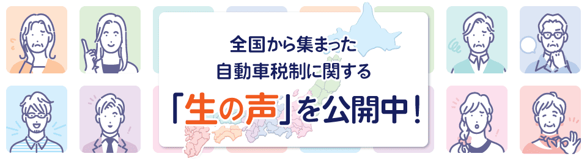
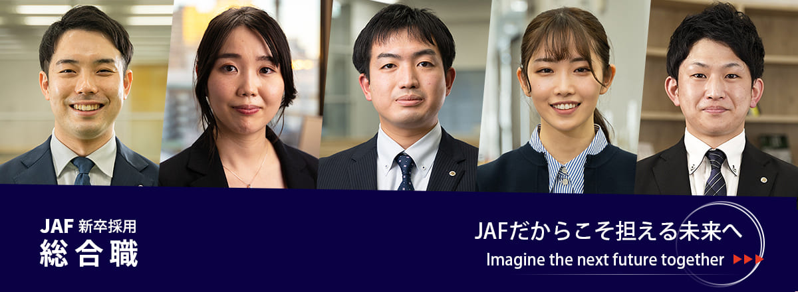
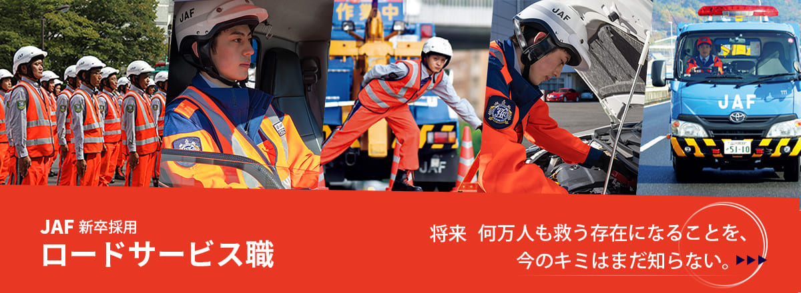
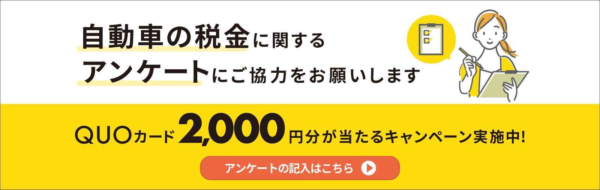
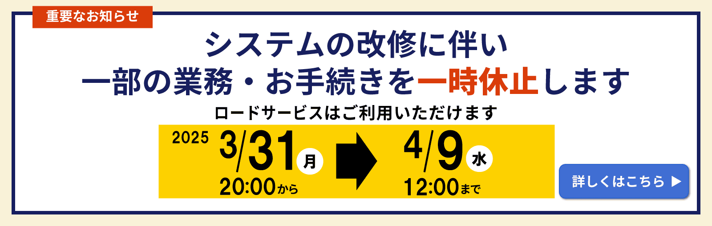

About Me
私は、22年にわたりWeb制作の現場でキャリアを積んできた、正確性と安定稼働に強みを持つマークアップエンジニアです。変化の激しいWeb業界において、常に知識と技術を吸収し、第一線で活躍してまいりました。
短大卒業後、旅行ガイドブックの編集アシスタントとしてキャリアをスタート。緻密な情報と正確性が求められる地図制作に惹かれ、Adobe Illustratorでのコマ地図作成が、私の「細部へのこだわり」の原点となりました。その後、3ヶ月間の職業訓練でWebの基礎を体系的に学び、この業界へと足を踏み入れました。
Webサイトのコーディングから公開後の運用・保守まで一貫して携わり、特に細部にまでこだわり抜く丁寧な作業と、既存サイトの安定稼働を維持する責任感には自信があります。Sitecoreのような複雑なエンタープライズ向けCMSでの豊富な運用経験を通じて、多様なシステム環境への順応力と、効率的なコンテンツ管理スキルを培ってきました。
変化の速いWeb業界において、私は常に学び続けることの重要性を実感しています。特に現在はWordPressの実践的な運用スキルを意欲的に学習しており、AIなども積極的に活用することで、効率的かつ体系的に理解を深めています。
私は、黙々と作業に集中し、高品質な成果を追求することを得意としています。Webサイトが滞りなく稼働し、ユーザーに最適な情報を提供し続けることに大きなやりがいを感じます。
現在、家族のサポートも考慮し、フルタイム・在宅中心での勤務を希望しております。通勤時間がなくなることで業務に集中し、より高い生産性を発揮できると確信しております。これまでの経験と、Webサイトの「裏側」を支える情熱、そして新しいテクノロジーを取り入れる柔軟な姿勢で、貴社に貢献できることを楽しみにしております。
Appeal
Webサイトは公開して終わりではありません。私は22年以上のキャリアを通じて、「運用・更新」こそがWebサイトの価値を長期的に維持し、最大化する要であると確信しています。地図制作で培った細部へのこだわりと、職業訓練でのWeb基礎の習得を起点に、この奥深いWebの世界へ飛び込みました。
私の最大の強みは、長年の実務で培われた圧倒的な正確性と、高い品質への徹底したこだわりです。複雑なコード構造を素早く理解し、ミスのない丁寧なマークアップでWeb標準に準拠したサイトを実現します。これにより、予期せぬ表示崩れや機能不全を防ぎ、Webサイトの安定稼働と信頼性維持に貢献してまいりました。
特に、エンタープライズ向けCMSであるSitecoreでの豊富な運用経験は、多岐にわたるシステム環境への適応力と、効率的なコンテンツ管理能力の証です。この経験を活かし、現在学習中のWordPressをはじめとする新たなCMS環境においても、迅速に順応し、即戦力として貢献できると自負しております。
Career
- 株式会社弘済出版社 第2出版事業部 ニューガイド編集部
- 【在籍期間】1996年10月 アルバイト入社～2002年4月（5年6ヶ月）
- 【事業内容】時刻表出版、国内旅行ガイドブックの企画・制作・出版、地図編集・制作（営業地図、地方自治体発行の便利マップ、防災マップなど）
- 【担当業務】国内版旅行ガイドブック「私の日本」の編集・出版アシスタントとして、文字校正、データ入力、レイアウトチェック、電話校正、出張校正、コマ地図作成、制作進行管理補助。
- 株式会社アゴラ・ステーション IT事業部 システムソリューション
- 【在籍期間】2004年5月正社員入社～2010年7月一身上の都合により退社（6年2ヶ月）
- 【事業内容】Webサイトの企画・制作・運用支援、企業のネットワーク構築・運用支援、業務アプリケーション開発、事務代行業務、グラフィックデザイン企画・制作
- 【担当業務】デザインとコーディングを担当。更新業務、新規作成など。小規模や企画サイトの画面構成、デザイン、コーディング制作、各種バナー作成など。
- 株式会社うぶすな
- 【在籍期間】2011年5月正社員入社～2013年10月事業縮小、および移転の為退社（2年5ヶ月）
- 【事業内容】地域情報サイト制作、観光コンサルティング、Webサイト制作など、ネット上のあらゆるコンテンツの企画・制作サービスを提供
- 【担当業務】更新運用、Umbracoの更新作業・バナー制作を担当。
- テクノウェブ株式会社（派遣先 昭文社 デジタルコンテンツ事業本部 ソリューション第一事業部 事業企画グループ 配属）
- 【在籍期間】2013年12月 派遣社員入社 ～2019年4月事業縮小により契約終了（5年4ヶ月）
- 【事業内容】独自開発の地図データ・ガイドデータを中核に、地図・雑誌・ガイドブックの企画・制作・出版販売、デジタルデータベースの企画・制作・販売およびそれらを活用したサービス提供を行う「地図・旅行情報提供事業」において、ASPパッケージ商品（店舗検索サイト）の開発制作チームに所属。地図表示やルート検索・住所検索といった「地図検索システム」と簡易CMS「物件管理システム」を組み合わせた検索機能を持つシステムの開発に貢献しました。
- 【担当業務】新規案件の実装 既存案件の改修・更新 地図アイコンの作成・テンプレート制作
- あとらす21株式会社（派遣先JAFメディアワークス）
- 【在籍期間】 ・2019年5月 派遣社員入社～ ・2022年5月 契約社員～2025年6月現在（6年1ヶ月）
Works
    
Skills
- 主要スキル
- HTML5, CSS3 (Web標準準拠, 高品質なマークアップ, レスポンシブデザイン, クロスブラウザ対応)
- JavaScript/jQuery
- 既存コードの読解・修正, 簡単なインタラクションの実装
- CMS
- Sitecore (豊富な運用経験), WordPress (独学・個人学習にてレンタルサーバー環境での構築・テンプレートカスタマイズ経験あり)
- 開発補助ツール
- Git/GitHub (基本的なバージョン管理の操作が可能), Sass (SCSSでの記述経験 / 個人学習にてNode.js環境でのコンパイル経験あり), Node.js/npm (個人学習にてフロントエンド開発環境の構築・管理に使用経験あり)
- 画像編集/デザインツール
- Photoshop, Illustrator (ウェブサイト更新に必要な画像加工・バナー作成レベル), Fireworks (約20年前はWebデザイン（カンプ作成）にも使用)
Contact
メールアドレス